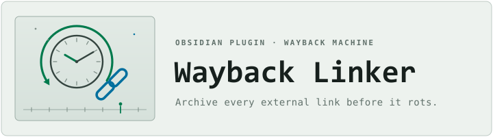
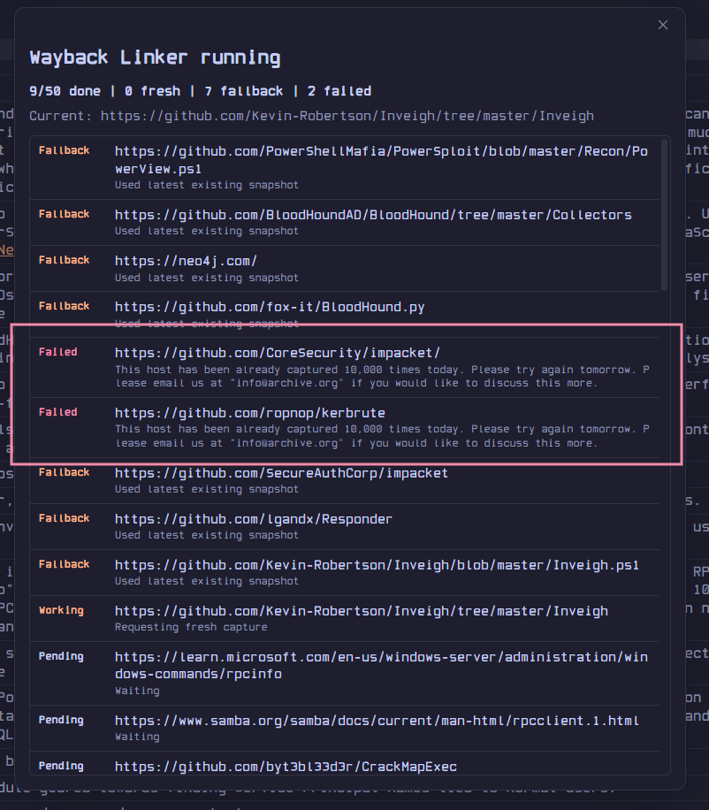

An Obsidian plugin that sends the external links in a note — or your whole vault — to the Wayback Machine and rewrites them to durable snapshot URLs.
Capabilities
Wayback Linker talks directly to the Internet Archive so the sources in your notes never disappear — and never touches a link unless the capture succeeded.
Requests a new snapshot from Save Page Now and checks the returned timestamp is actually fresh — never a stale capture served from cache.
Scans every Markdown note, confirms link, note, and unique-URL counts with you first, archives each URL once, and replaces across the vault.
Notes are re-read and re-parsed after captures finish, so edits made mid-run never cause a stale or misplaced replacement.
If a fresh capture fails or times out, optionally fall back to the most recent existing snapshot from the availability and CDX APIs.
Skip hosts like amazon.com everywhere — notes, vault scans, and right-click archiving — with subdomains matched automatically.
Internet Archive S3 keys live in Obsidian's native keychain — only the entry names are ever written to plugin data.
Workflow
Click the ribbon button, run Archive active note links, start a confirmed vault-wide pass — or right-click a single URL in the editor.
Each unique URL is sent to Save Page Now with polite pacing, throttle-aware retries, and a live progress window you can cancel at any time.
Once a snapshot is verified fresh, the original URL is rewritten in place to the permanent web.archive.org snapshot URL.
In action

Get started
Real-Fruit-Snacks/wayback-linker.main.js, manifest.json, and styles.css from the latest release..obsidian/plugins/wayback-linker/.